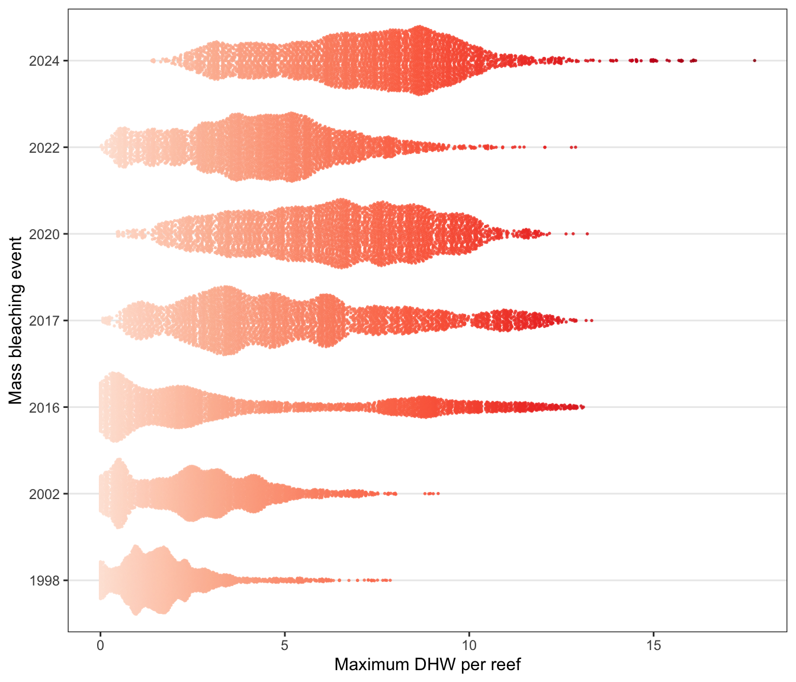

GBR-wide trajectories of mass coral bleaching (1986:2024)
George Roff
2024-03-29
The dataset can be used to determine how the landscape has changed across multiple mass coral bleaching events since 1985 in terms of increasing frequency and intensity of heatwaves. The below example is the output of individual GAM model fits for 3724 reef polygons (label_ID) from 1985-2024.
library(tidyverse)
library(sf)
gbr_shape_dhw <- readRDS("/Users/rof011/GBR-coral-bleaching/data/gbr_shape_dhw.RDS")
# https://zenodo.org/records/5146061/preview/ymbozec/REEFMOD.6.4_GBR_HINDCAST_ANALYSES-v1.0.0.zip
# make a new zones for whole id
id_zones <- read.csv("/Users/rof011/GBR-coral-bleaching/data/gbr_zones.csv") |>
mutate(id=str_replace(label_id, "[a-zA-Z]$", "")) |>
dplyr::select(-label_id, -X) |>
distinct()
gbr_shape_dhw_centroid <- gbr_shape_dhw |>
st_centroid() |>
st_coordinates() |>
as.data.frame() |>
rename(lon=1, lat=2)
gbr_shape_dhw_zones_long <- gbr_shape_dhw %>%
as.data.frame() %>%
dplyr::select(-geometry) %>%
cbind(., gbr_shape_dhw_centroid) %>%
pivot_longer(cols = starts_with("dhw_max_"), names_to = "year", values_to = "dhw_max") %>%
mutate(year = str_replace(year, "dhw_max_", "")) %>%
left_join(id_zones, by="id")
ggplot() + theme_bw() +
geom_smooth(data=gbr_shape_dhw_zones_long |> na.omit() |> droplevels(),
aes(x=year, y=dhw_max, group=gbr_name),
color="darkgrey", se = FALSE, linewidth=0.05, method = "gam",
formula = y ~ s(x, bs = "cr", k = 10), show.legend = FALSE) +
theme(axis.text.x = element_text(angle = 90, vjust = 0.5, hjust=1)) 
Similarly, the data can be used to compare the impact of the current event (2024) with the previous mass bleaching events on the GBR (1998, 2002, 2012, 2016, 2017, 2020, 2022) in terms of maximum DHW experienced per event:
dhw_subset_bleaching_dhw <- gbr_shape_dhw |>
as.data.frame() |>
dplyr::select(-id, -geometry) |>
pivot_longer(-gbr_name, names_to="year", values_to="dhw_max") |>
mutate(year = as.numeric(str_extract_all(year, "\\d+"))) |>
arrange(gbr_name, year) |>
filter(year %in% c(1998,2002,2016,2017,2020,2022,2024)) |>
group_by(year) |>
mutate(mean_dhw_max = mean(dhw_max, na.rm=TRUE))
a <- ggplot() + theme_bw() +
ggridges::stat_density_ridges(data=dhw_subset_bleaching_dhw, alpha=0.8, scale=1.2, size=0.3,
aes(y=as.factor(year), x=dhw_max, fill=mean_dhw_max), rel_min_height=0.00001,
quantiles = c(0.5), quantile_lines = FALSE, quantile_fun = mean,
vline_color = c("white"), vline_width = 2, show.legend=FALSE) +
scale_fill_distiller(palette = "Reds", direction = 1, name="mean\nmax_DHW\nper reef") +
xlab("Maximum DHW per reef") + ylab("Mass bleaching event") +
theme(panel.grid.major.x = element_blank(), panel.grid.minor.x = element_blank())
a
# b <- ggplot() + theme_bw() +
# ggridges::stat_density_ridges(data=dhw_subset_bleaching_dhw, alpha=0.8, scale=0.8, size=0.3,
# rel_min_height=0.001,
# aes(y=as.factor(year), x=dhw_max, fill=mean_dhw_max),show.legend=TRUE) +
# scale_fill_distiller(palette = "Reds", direction = 1, name="mean\nmax_DHW\nper reef") +
# xlab("Maximum DHW per reef") + ylab("") + scale_x_continuous(limits=c(0,8), oob = scales::oob_squish) +
# theme(panel.grid.major.x = element_blank(), panel.grid.minor.x = element_blank())
#
# a+b+ patchwork::plot_layout(widths = c(0.7,0.3))